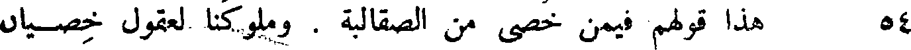
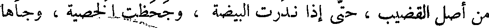
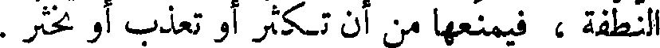
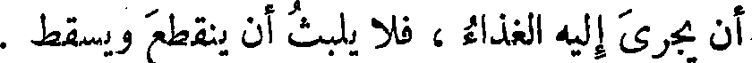
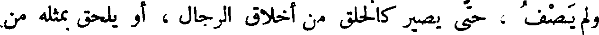
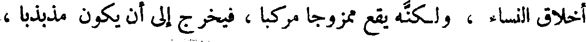
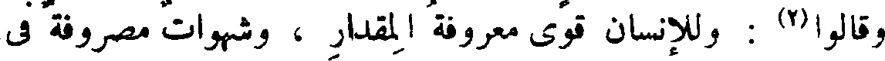
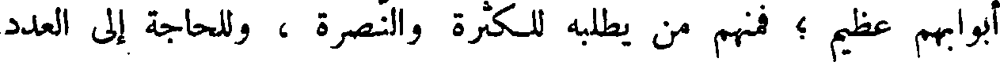

File: 000050.gt.txt (if the image is defective, simply delete all Arabic text and the line will be excluded)

إلا أن الخصي من صباه ؛ يحسن صنعة الدبوق (1) ، ويجيد دعاء الحمام
File: 000051.gt.txt (if the image is defective, simply delete all Arabic text and the line will be excluded)

الطوري (2) ، وما شئت من صغار الصناعات .
File: 000052.gt.txt (if the image is defective, simply delete all Arabic text and the line will be excluded)

وقد زعم البصريون أن حديجا(3) الخصي ، خادم المثنى بن زهير ،
File: 000053.gt.txt (if the image is defective, simply delete all Arabic text and the line will be excluded)

كان يجاري(4) مثنى في البصر بالحمام ، وفي صحة الفراسة ، وإتقان المعرفة ،
File: 000054.gt.txt (if the image is defective, simply delete all Arabic text and the line will be excluded)

وجودة الرياضة . وسنذكر حاله في باب القول في الحمام إن شاء الله تعالى .
File: 000055.gt.txt (if the image is defective, simply delete all Arabic text and the line will be excluded)

54 هذا قولهم فيمن خصي من الصقالبة . وملوكنا لعقول خصيان
File: 000056.gt.txt (if the image is defective, simply delete all Arabic text and the line will be excluded)

خراسان أحمد ، وهم قليل ، ولذلك لم نأت من أمرهم بشيء مشهور ،
File: 000057.gt.txt (if the image is defective, simply delete all Arabic text and the line will be excluded)

( خصيان السند )
File: 000058.gt.txt (if the image is defective, simply delete all Arabic text and the line will be excluded)

وأمر مذكور .
File: 000059.gt.txt (if the image is defective, simply delete all Arabic text and the line will be excluded)

وأما السند ، فلم يكن فيهم أيضا من الخصيان إلا النفر الذين كان
File: 000060.gt.txt (if the image is defective, simply delete all Arabic text and the line will be excluded)

خصاهم موسى بن كعب ، وقد رأيت أنا بعضهم ، وزعم لي أنه خصى أربعة
File: 000061.gt.txt (if the image is defective, simply delete all Arabic text and the line will be excluded)

هو أحدهم ، ورأيت الخصاء ، قد جذبه إلى حب الحمام ، وعمل التكك(5) ،
File: 000062.gt.txt (if the image is defective, simply delete all Arabic text and the line will be excluded)

والهراش بالديوك ، وهذا شيء لم يجر منه على عرق ، وإنما قاده إليه قطع
File: 000063.gt.txt (if the image is defective, simply delete all Arabic text and the line will be excluded)

ذلك العضو .
File: 000064.gt.txt (if the image is defective, simply delete all Arabic text and the line will be excluded)

القتل قتلة صريحة(1) مريحة - إلا أصغر عند الله تعالى ، وأسهل على هذا
File: 000065.gt.txt (if the image is defective, simply delete all Arabic text and the line will be excluded)

المظلوم من طول التعذيب . والله تعالى بالمرصاد .
File: 000066.gt.txt (if the image is defective, simply delete all Arabic text and the line will be excluded)

( خصاء البهائم )
File: 000067.gt.txt (if the image is defective, simply delete all Arabic text and the line will be excluded)

وأما خصاء البهائم ، فمنه الوجاء ، وهو أن يشد عصب مجامع الخصية
File: 000068.gt.txt (if the image is defective, simply delete all Arabic text and the line will be excluded)

من أصل القضيب ، حتى إذا ندرت البيضة ، وجحظت الخصية ، وجأها
File: 000069.gt.txt (if the image is defective, simply delete all Arabic text and the line will be excluded)

حتى يرضها ، فهي عند ذلك تذبل وتنخسف ، وتذوي وتستدق ، حتى
File: 000070.gt.txt (if the image is defective, simply delete all Arabic text and the line will be excluded)

تذهب قواها ، وتنسد المجاري إليها ، ويسري ذلك الفساد إلى موضع تربية
File: 000071.gt.txt (if the image is defective, simply delete all Arabic text and the line will be excluded)

النطفة ، فيمنعها من أن تكثر أو تعذب أو تخثر .
File: 000072.gt.txt (if the image is defective, simply delete all Arabic text and the line will be excluded)

ومنها ما يكون بالشد والعصب، وشدة التحزيق، والعقد بالخيط الشديد
File: 000073.gt.txt (if the image is defective, simply delete all Arabic text and the line will be excluded)

الوتير الشديد الفتل ، فإذا تركه على ذلك عمل فيه وحز ، أو أ كل ومنعه من
File: 000074.gt.txt (if the image is defective, simply delete all Arabic text and the line will be excluded)

أن يجزي إليه الغذاء ، فلا يلبث أن ينقطع ويسقط .
File: 000075.gt.txt (if the image is defective, simply delete all Arabic text and the line will be excluded)

ومنه الامتلاخ ، وهو امتلاخ البيضتين .
File: 000076.gt.txt (if the image is defective, simply delete all Arabic text and the line will be excluded)
( خصاء الناس )
File: 000077.gt.txt (if the image is defective, simply delete all Arabic text and the line will be excluded)

فأما خصاء الناس ، فإن للخاصي حديدة مرهفة محماة ، وهي الحاسمة،
File: 000078.gt.txt (if the image is defective, simply delete all Arabic text and the line will be excluded)

وهي القاطعة. قال أبو زيد: يقال خصيت الدابة أخصيها خصاء،
File: 000079.gt.txt (if the image is defective, simply delete all Arabic text and the line will be excluded)

ووجأتها أجؤها وجاء . ويقال : برئت إليك من الخصاء أو الوجاء ، ولا يقال
File: 000080.gt.txt (if the image is defective, simply delete all Arabic text and the line will be excluded)

ذلك إلا لما كان قريب العهد لم يبرأ منه ، فإذا برئ لم يقل له(2) .
File: 000081.gt.txt (if the image is defective, simply delete all Arabic text and the line will be excluded)

وفالوا ، الخصي لا يصلع كما لا تصلع المرأة ، وإذا قطع العضو الذي
File: 000082.gt.txt (if the image is defective, simply delete all Arabic text and the line will be excluded)

كان به فحلا تاما، أخرجه ذلك من أكثر معاني الفحول وصفاتهم ،
File: 000083.gt.txt (if the image is defective, simply delete all Arabic text and the line will be excluded)

وإذا أخرجه من ذلك الكمال ، صيره كالبغل الذي ليس هو حمارا ولا فرسا ،
File: 000084.gt.txt (if the image is defective, simply delete all Arabic text and the line will be excluded)

وتصير طباعه مقسومة على طباع الذكر والأنثى ، وربما لم يخلص له الخلق
File: 000085.gt.txt (if the image is defective, simply delete all Arabic text and the line will be excluded)

ولم يصف ، حتى يصير كالخلق من أخلاق الرجال ، أو يلحق بمثله من
File: 000086.gt.txt (if the image is defective, simply delete all Arabic text and the line will be excluded)

أخلاق النساء ، ولكنه يقع ممزوجا مركبا ، فيخرج إلى أن يكون مذبذبا ،
File: 000087.gt.txt (if the image is defective, simply delete all Arabic text and the line will be excluded)

لا إلى هؤلاء ولا إلى هؤلاء . وربما خرجت النتيجة وما يولده التركيب ،
File: 000088.gt.txt (if the image is defective, simply delete all Arabic text and the line will be excluded)

عن مقدار معاني الأبوين ، كما يجوز عمر البغل عمر أبويه ، وكذلك ما عددنا
File: 000089.gt.txt (if the image is defective, simply delete all Arabic text and the line will be excluded)

( طلب النسل )
File: 000090.gt.txt (if the image is defective, simply delete all Arabic text and the line will be excluded)

في صدر هذا الكلام(1) .
File: 000091.gt.txt (if the image is defective, simply delete all Arabic text and the line will be excluded)

وقالوا(2) : وللإنسان قوى معروفة المقدار ، وشهوات مصروفة في
File: 000092.gt.txt (if the image is defective, simply delete all Arabic text and the line will be excluded)

وجوه حاجات النفوس ، مقسومة عليها ، لا يجوز تعطيلها وترك استعمالها ،
File: 000093.gt.txt (if the image is defective, simply delete all Arabic text and the line will be excluded)

ما كانت النفوس قائمة بطبائعها ومزاجاتها وحاجاتها . وباب المنكح من
File: 000094.gt.txt (if the image is defective, simply delete all Arabic text and the line will be excluded)

أكبرها ، وأقواها ،وأعمها .
File: 000095.gt.txt (if the image is defective, simply delete all Arabic text and the line will be excluded)

ويدخل في باب المنكح ما في طبائعهم من طلب الولد ، وهو باب من
File: 000096.gt.txt (if the image is defective, simply delete all Arabic text and the line will be excluded)

أبوابهم عظيم ؛ فمنهم من يطلبه للكثرة والنصرة ، وللحاجة إلى العدد
File: 000097.gt.txt (if the image is defective, simply delete all Arabic text and the line will be excluded)

والقوة ، ولذلك استلاطت العرب الرجال ، وأغضت(3) على نسب المولود
File: 000098.gt.txt (if the image is defective, simply delete all Arabic text and the line will be excluded)

من يزيده من الخطأ الذي يجده في النسخة ، ثم لاينقص منه ، ثم يعارض
File: 000099.gt.txt (if the image is defective, simply delete all Arabic text and the line will be excluded)

بذلك من يترك ذلك المقدار من الخطأ على حاله ، إذا كان ليس من طاقته